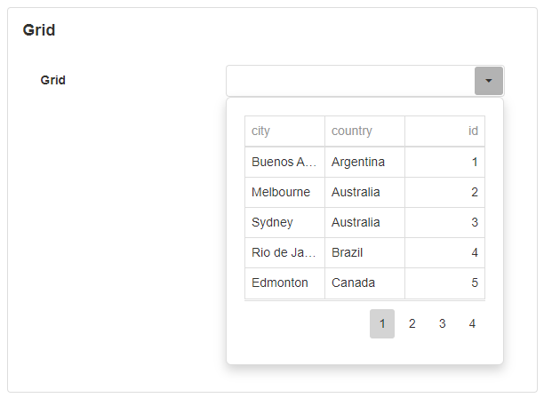
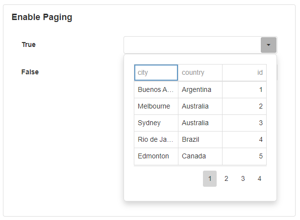
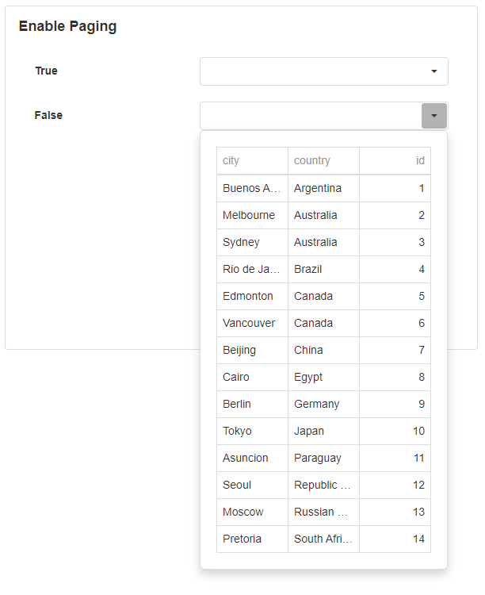
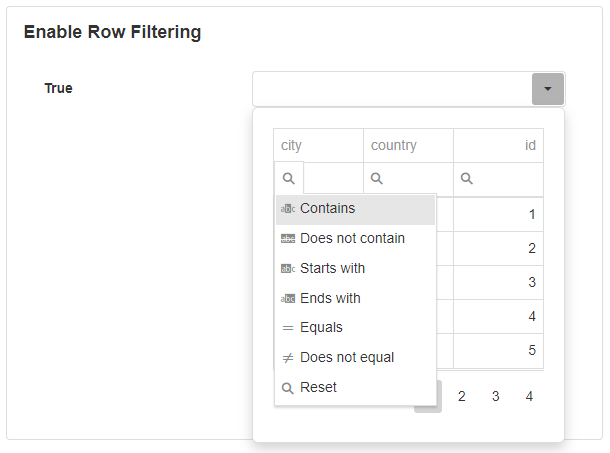
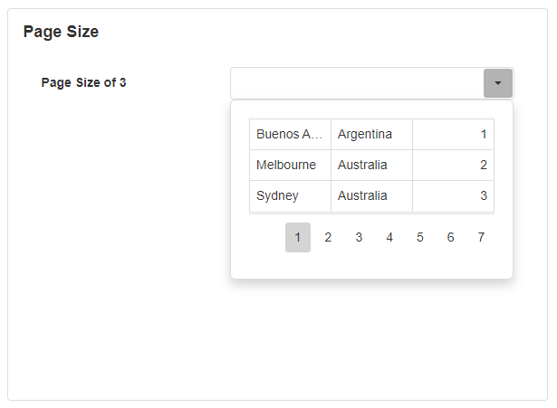
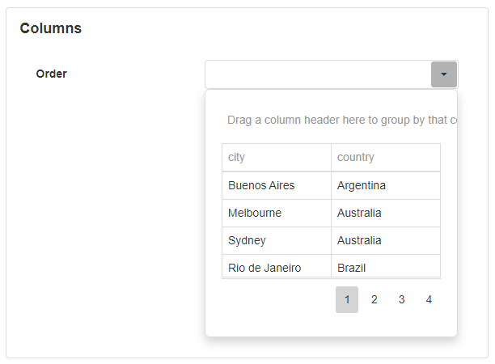

Dropdown Grid
A Dropdown Grid is a dropdown that displays a grid of data to the user. The Data Grid can be connected to a Data Source to retrieve and display specific values. This is useful for dynamically creating the dropdown from items that already exist and may change over time.
Dropdown Grid Properties
Appearance
Common Properties
You can change the visibility, styling mode, placeholder, tooltip, and the visibility of the clear button;
See the Common Properties article for more details on common appearance properties.
Grid
The visibility of the borders, column lines, row lines, and headers of the grid can be specified. By default, the borders, column lines, row lines, and headers are set to true.

Options for the grid include showing or hiding the borders, headers, column lines, or column rows.
For details on these common grid properties, see the Data Grid article.
Behavior
Common Properties
The Dropdown Grid behavior includes changing the read-only, disabled.
See the Common Properties article for more details on common behavior properties.
Allow Paging
This specifies whether the content on the grid is separated into pages.


Enable Column Filtering
Allows the user to filter for a specific column in the list.

Enable Row Filtering
Allows the user to filter for a specific row in the list.

Page Size
Specifies the number of records that are displayed to the user for each page. This will only work if allow paging is set to true.

Allow Grouping
This option gives the user the ability to group records together.

Store User Selection
When enabled, your selection at runtime is saved in your browser's local data, so that it is remembered when the page reloads. This includes re-opening the App and returning from a drill-down.
Value
Common Properties
The value property is common to most Blocks;
See the Common Properties article for more details on common value properties.
Data Source
Common Properties
Properties that are common to most Blocks include: filter, sort, show # of results, and skip # of results;
See the Common Properties article for more details on common Data Source properties.
The Data Source property is required for the Dropdown Grid.
Data
Display Expression
The expression is a user-friendly name for what the user can see. For example, the text that is showing in one of the rows of the dropdown.
The Display Expression property is required for the Dropdown Grid.
Value Expression
This is the actual value stored in the background of the application in the code. For example, instead of true or false, it would be 0 or 1.
The Value Expression property is required for the Dropdown Grid.
Columns
Order
The order allows you to specify the format for the columns. This includes the visibility of the columns, the alignment, the captions, or the width.

Action
Common Properties
Properties that are common to most Blocks include: Navigate To and Show Confirmation Dialog;
See the Common Properties article for more details on common action properties.
Last modified: September 01, 2025